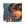

|

Kizmet
Author of 99 Stories |
Four Months Prior
Ranma watched the approaching girl out of the corner of his eye but he overtly ignored her presence until he'd finished the workout he'd planned for the day.
"Akane, hi."
"Hey." Akane took a seat on a bench near the entranceway. She stared at her feet. Several minutes passed.
"If your dad's making you come I won't mention it to anyone if you stop." Ranma said when the silence became too uncomfortable.
"Daddy isn't making me come."
Ranma waited. "Well if you're going to keep showing up, you might as well talk to me."
"I don't want to risk us getting in an argument. I'll loose my temper, you could get hurt."
Ranma quietly increased the distance between them. "I don't break that easily."
"How can you say that after what happened?"
Ranma's fists clenched. "I used to let you hit me. It was the quickest way to get you over being angry. I'm not going to do that anymore."
"You couldn't stop me right now."
Ranma's nails dug into his palms. "K'so! Then why don't you learn to control your own stupid temper?" He paused then smirked poisonously and added. "We both know there's nothing cute about your temper."
Anger, quickly chased by guilt flashed across Akane's face. She fled the courtyard.
Ranma knew she'd be crying in a few seconds. He sat down and pulled his knees up to his chest. "What are you going to do if she doesn't come back?" He whispered.
"Nihao Ranma." Shampoo gave the boy a quick hug while Mousse grumbled. "Brought Duck-boy for practicing."
"Thanks. Hey Mousse, wanna spar?"
Ranma grinned at the horrified expression on Mousse's face. "A joke. I've been doing paired katas with Pop but that's as much as I want to push it." Ranma didn't tell Mousse that the inherent unpredictability in a real spar would probably defeat him. "What did ya bring?"
"Is called Risk." Shampoo said.
"The goal is to conquer the world." Mousse said.
"Big surprise. Shampoo, ya ever notice he's got some odd interests?"
"You win more often than I do."
"Hey, I'm saving the world from you." Ranma replied.
"Let's just play." Mousse said.
"I'll go get the water, you guys set up." Ranma said.
Forty minutes later.
"Ah-ha! I control Iceland. Soon all of Europe will fall!"
"Stupid Mousse, Ranma's army not defeated."
"You always take his side." Mousse sulked.
"Put on your glasses, then you can count the spots on the dice for yourself." Ranma said. "My one army is worth ten of yours."
"Next turn I shall return and overwhelm your position."
"That what Mousse say last time, but too busy replenishing forces lost to Shampoo in South America."
"Why don't you attack him from Africa for once?" Mousse suggested. "We're both going to loose if Ranma keeps all of Asia."
"Shampoo like Ranma better." The lavender-haired girl replied blithely.
"Shampoo! How could you?"
"Next time you could bring Ukyo." Ranma offered.
"So they can both gang up on me with you?" Mousse asked.
"Ucchan's competitive." Ranma said.
"So's Shampoo. The best I could hope for is that they'd both ignore me and attack one another."
"Shampoo and Ranma rule world together." Shampoo declared.
"I guess if you could find Bacon-breath…"
"Is Ranma sure?" Shampoo asked, suddenly serious.
"Yeah, I'm not going to freak out, but you're on my side."
"I think I'm getting the worst of this arrangement." Mousse commented.
"Yep, Shampoo agrees."
"Cologne wanted us back by the lunch rush." Mousse said. "We'll have to finish tomorrow."
"Mousse go. Shampoo catch up later."
"But!" Mousse protested.
Shampoo sighed. "Won't be long."
Ranma went to get some hot water.
"Go or get kicked out. Shampoo going to talk."
"Fine."
Shampoo waited for the door to slam. "Ranma do okay. Shampoo didn't see difference between when you boy-type or girl-type."
"One of the nurses pointed out guys can get raped too; like that was supposed to help."
"Ranma really be okay with both pig-boy and Mousse here?"
"I'll never get out of here if I can't deal with being around more than one guy at a time."
"How are you doing boy?" Genma asked.
"Why don't you tell me?" Ranma said confidently then walked to the center of the courtyard and started one of the most difficult katas he knew.
Genma watched. Each movement flowed smoothly into the next. Ranma was precise but not mechanical, his expression was one of intense focus, still he was smiling. When he finished Genma shrugged. "You could have picked a more challenging pace."
"Like you could do better old man." Ranma laughed. "Even doped to the gills I did it right and you know it."
Ranma spotted Dr. Soy hanging back n the shadow of the doorway while he talked with his father. "Hey Doc! What'd they say? Can I stop taking the crap and go home?"
"Ranma…"
"No! What more do they want from me? I spent a fucking hour in a room with Kuno Tatewaki; age seventeen, blah, blah, blah, while in girl-form and I didn't even try to kill him. You wanted to hit him after the first fifteen minutes. And he wasn't even trying to get a date with you. Do ya want me to have the girls drag Happosai back here? What do I have to!"
"Ranma, stop it." The doctor said tiredly. "When we asked you to hold a cat you screamed and fainted. The potential still exists that…"
"I've been like that since I was ten years old! It's normal, I never killed anyone until… you know." Ranma argued. "I'm in control, I'm not overreacting anymore, I'm normal for me. Geeze, I was restrained with Kuno. If I hadn't been trying to prove a point I would have knocked him out after the first minute or so."
"I know, but you have no idea how badly you scare people. Ranma, as best as we can determine you killed those six bastards in a matter of seconds using just your bare hands. And you entered that fight at a severe disadvantage. The police aren't sure they could stop you if you lost control, even if they were willing to shoot you."
"They can't keep me here if I don't want to stay. I could walk out right now and no one would stop me. Once your stupid drugs ware off there's no way they'd get me back."
"I know and I'm trusting you not to do that. That's why I never mentioned it when their security precautions became worthless almost two months ago."
Ranma turned and smashed his fist into a concrete bench; it shattered. He stalked away, several seconds later they heard a door slam.
"Sometimes I wish I'd never found that manual." Genma said quietly. "But if Ranma hadn't known the cat-fist… I don't think they would have been satisfied until they'd killed him. Soun is well respected, perhaps if he talked to them. At this point I'd even considered recognizing Shampoo's claim, I doubt they'd object to her taking the boy out of the country."
"Let me think about how to ease Ranma's ailophobia before anyone resorts to desperate measures."
"Get the hell out of my way Tendo!"
"Ukyo, what do you think you're going to do? This won't help. We have to be reasonable." Nabiki protested.
"I'm going to go down there and I'm going to reason with those jackasses!" Ukyo hefted a bag of exploding flour to demonstrate what she meant by 'reason with'.
Mousse and Shampoo each grabbed an arm and forcibly sat the enraged Okonomiyaki Chef down.
"We don't go around randomly beating people up!" Nabiki exclaimed.
"Sure we do." Ukyo replied.
"Not when they're members of the city council, judges, the like. You don't pick fights with non-martial artists."
"Mercenary Girl is right. This not the way." Shampoo said. "Why bother reasoning? We take Ranma, let lost boy lead until no hope of being followed then we live happily ever after."
"You're right, Ryoga could get us out of the country but we should get some funds together first and I'll bring my grill."
"Shampoo get supplies for Ranma."
Both girls left with plans on how to loose the other without Ryoga or Ranma noticing until it was too late.
It was the middle of the night. It had been six hours. The chair shoved under the door handle was a strong indicator that Ranma didn't want to talk to anyone.
He hadn't been bluffing when he said he could leave if he chose to. He'd learned to keep dozens of alternate plans in his head at any minute. Cologne, Happosai, Pantyhose, Ryoga and his pop would beat him in a fight. Shampoo and Soun would probably take him two times out of three. Ukyo and Mousse might win, anyone beneath their level wouldn't last long enough for the handicap placed on him to become crippling.
Once he could leave the minor details to muscle memory again he'd be better than ever. The next time Pantyhose came by it was going to be fun…
Except they weren't going to let him go and the Doc had to go and put it on his honor not to run. He had to get control of over the Nekoken, by definition the Nekoken wasn't controllable. Saotome Ranma didn't loose.
They weren't happy with him getting things back to the way it had been. He was going to have to do better.
Ranma focused inward. The Nekoken was a mesh of gray floating under the surface of his mind, closer to the surface than it ever had been before. He prodded at it. It was survival instincts and power and not much else. It was folded up and tucked away right now but it was waiting for him to need it then it would wrap around him like a blanket, velvet on the inside steel-wool on the outside.
There was nothing to stop him from controlling it. In the pit he'd just wanted something to protect him. Now he wanted control. He wanted to protect himself, not to depend on anything else. He wasn't going to run away. He wasn't going to loose.
"Mr. Saotome, I… your son had… Ranma went into the Nekoken last night. There was no trigger. We tried activating his curse; we tried sedating him. His condition remains unchanged."
"Akane." Genma stated. "She can bring him out of it."
"She calms him down. The sedative should have done the same thing."
"You could try using her."
"You know he can be dangerous. They fought the last time they talked and if she gets close enough to touch him he could kill her with a swipe of his hand."
"They always fight, it doesn't mean anything."
"Maybe it does now."
"I don't care."
"What if Ranma does care and your friend Soun might object to endangering his daughter. We're not going to let anyone go inside that room."
"Ranma always comes out of it, you'll see."
"Maybe Ranma will come out if when he falls asleep naturally, but he is the only person I've heard of who ever recovered. Elder Cologne arranged for me to talk to a member of the Musk's feline sect, they created the Nekoken. None of the children they put through the process ever regained their human personas. I've hypothesized that it didn't take as firmly in Ranma's case, because he isn't genetically part cat. Still the fact that he went under while he was alone in a sealed room worries me."
"Uncle Saotome, could you teach me the Umisenken?"
"That technique is sealed Akane."
"I want to see Ranma; they won't let me." Akane said. "I want to help."
Genma hesitated. "I'd teach you if I could. Akane, you might be able to leave a ki-blast. All you have to do is find a dominant emotion and channel it. The umisenken is different; you have to be able to control your ki. All of your emotions have to be under your control."
"Good, I've got to learn to do that anyway. When can we start?"
Present
"Ranma! I'm so glad you're back!" Soun exclaimed enfolding the slight redhead in an enthusiastic hug. Ranma's muscles went rigid. Soun quickly released him. "Um, sorry about that."
"It's okay."
Nabiki looked Ranma over. "So, how'd you change their minds?"
"Went through the cat-fist training again. I didn't loose my head."
Genma laughed and slapped his son on the shoulder. "The hardest thing about the training was keeping the cats in the room long enough to convince them that the boy wasn't afraid."
"What was wrong with the cats?" Nabiki asked.
Ranma stared into her eyes. "They were terrified of me." Nabiki gulped. Ranma's pupils were slitted, like a cat's.
"I got here as quickly as I could!" Ryoga panted. "Am I too late for the party?"
Akane groaned. Shampoo stomped out of the dojo and grabbed Ryoga's ear. "Stupid lost boy, was supposed to be surprise party!"
"I'm glad it's you rather than me." Mousse commented to Ryoga then turned to Ranma. "Hey Ranma."
"Hi Mousse."
"Well Ranma, once again you've managed to surprise and impress me." Cologne said. "Congratulations on mastering the Nekoken."
"Thanks."
"Ranchan, the food's getting cold, and the weight is warping the table." Ukyo said. She loosely wrapped an arm around Ranma's waist as she dumped hot water over his head. "Kasumi, Shampoo and I all cooked." She leaned close and whispered. "Don't worry, we put Akane in charge of decorating."
Akane stuck her tongue out at Ukyo as she claimed Ranma's other side. "Welcome home, Ranma."
The End (Thank goodness, I was getting tired of this story)

|
Review this Chapter |